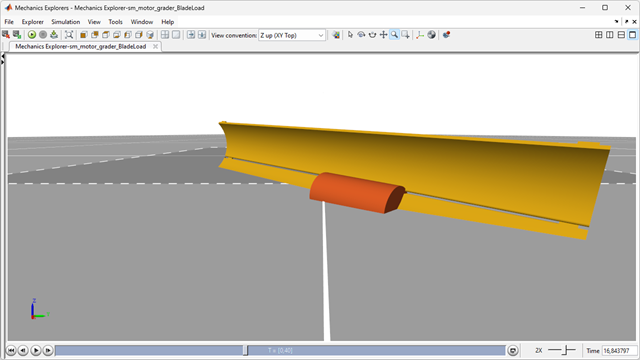
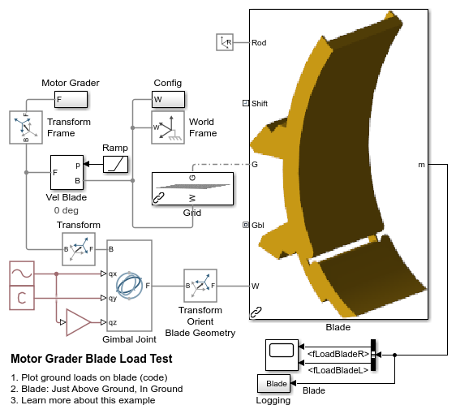
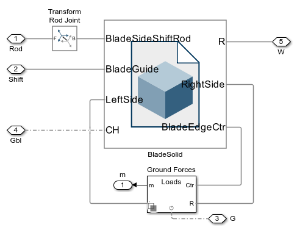
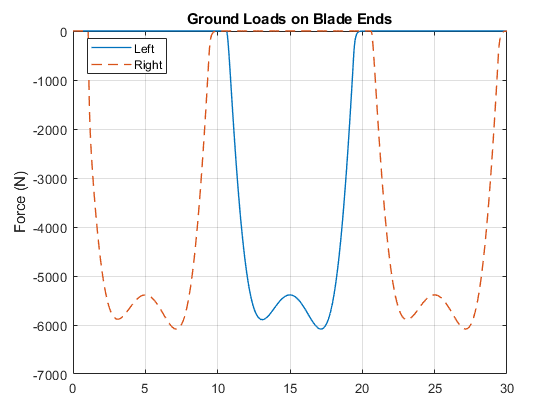
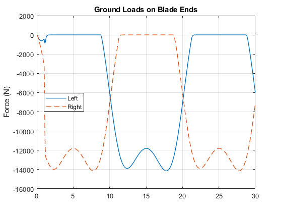

Motor Grader Blade Ground Load Model

This example models the ground loads on a motor grader blade. The ground loads are deliberately modeled as abstractly as possible to limit the number of parameters to be tuned and so that the simulation runs as quickly as possible
(return to Motor Grader Design with Simscape Overview)
Contents
Model
Motor Grader Blade Model
The blade is modeled by directly referencing the CAD geometry using the File Solid block. The blade connects to the side shift actuator and the bracket that holds the blade.
The forces on the blade from the ground can be configured in the Ground Forces subsystem. It can be configured to have no loads from the ground, only vertical forces, or load from scraping against the terrain.
Ground Forces on Blade
This subsystem applies a custom force to the blade.
- Subsystem Calculate Blade load calculates the force to apply at the frames connected to the L and R ports.
- The External Force blocks apply the force at frames connected at the L and R ports
- The Variable Cylinder blocks provide a visual indication of each force applied by varying the size of a cylinder.
Simulation Results: Blade Edge Above Ground
The plots below show the loads applied at the ends of the blade. During the test, the blade is moved forward slowly and it is rotated about its own vertical axis. The blade starts slightly above the ground and its vertical axis is tipped slightly forward from vertical. As a result, only one end is below ground at any time and only one force is non-zero.
Simulation Results: Blade Edge Below Ground
The plots below show the loads applied at the ends of the blade. During the test, the blade is moved forward slowly and it is rotated about its own vertical axis. The blade starts slightly below the ground and its vertical axis is tipped slightly forward from vertical. As a result, the total force is always non-zero and varies with the relative angle of the blade to its forward motion.
